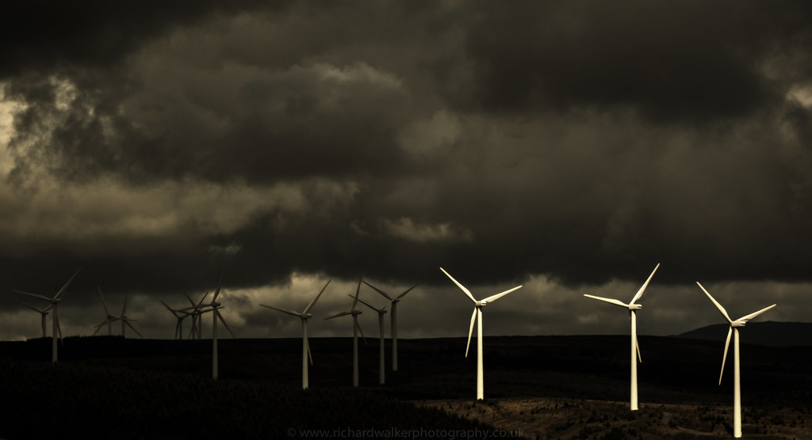

Wind energy is one of the fastest growing energy industrys in the world. There are many challengess associated with using wind for energy production.
Wind farms(places where wind energy is creates) require large amounts of consistent wind, to create constant and reliable energy.
For this reason researchers try and calculate wind trends to find possible locations that would be suitable for wind farms.
Advantages of Wind Power:
- Creates new career opportunities across the entire country.
- Enables economic growth due to high production of energy at relitively low costs
- Clean and renewable resource
- Wind turbines can be built in many locations
- Low ground impact
Cons of Wind Power:
- There are other energy solutions that are more effective and create less impact at the moment
- Enough wind is usually only available in rural locations
- Turbines create substantial amounts of noise pollution which can impact wildlife
